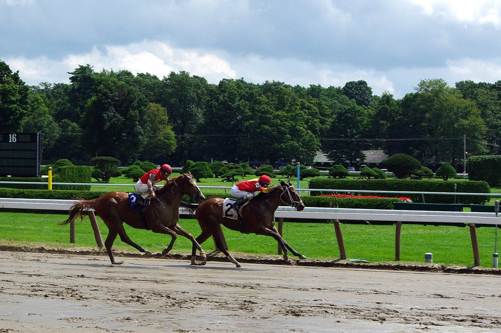

Nicky Richards, ante el Panel Disciplinario por el positivo de Jehol de Thaix en Kelso
El panel independiente se reúne el martes 24 de noviembre para fijar la sanción tras el positivo por 5-hidroxidantroleno. Richards ha admitido la infracción de la Regla (K)2.2.

CC BY 2.0
La vista sobre el positivo de Jehol de Thaix (FR) queda limitada a una sola cuestión: la sanción. Nicky Richards ha admitido haber infringido la Regla (K)2.2 del código de la British Horseracing Authority (BHA), por lo que el Panel Disciplinario independiente no tendrá que pronunciarse sobre los hechos, sino sobre la pena que corresponde imponer.
La sesión está convocada para el martes 24 de noviembre a las 9:30. El caso se remonta al 20 de abril de 2026, cuando Jehol de Thaix corrió el Malcom 'Scarra' Scott Memorial Handicap Hurdle en el hipódromo escocés de Kelso. El control posterior a la carrera dio positivo por 5-hidroxidantroleno.
La Regla (K)2.2 establece que la persona responsable del caballo debe garantizar que, antes de abandonar el hipódromo, no haya presente en el organismo del animal ninguna sustancia prohibida de categoría B el día en que esté inscrito para correr. Richards figura como persona responsable en este expediente.
El tribunal estará formado por Tim Grey, que lo preside, Alison O'Dowd y Manuela Ridgeway. El Panel Judicial de la BHA, que agrupa al Panel Disciplinario, al Comité de Apelación y al Comité de Licencias, es un órgano independiente y recibe apoyo administrativo de la autoridad hípica británica a través de su Ejecutiva. Las vistas se celebran actualmente por videoconferencia.
Funcionamiento de las vistas del Panel Judicial (BHA)
Por Martín Larrañeta